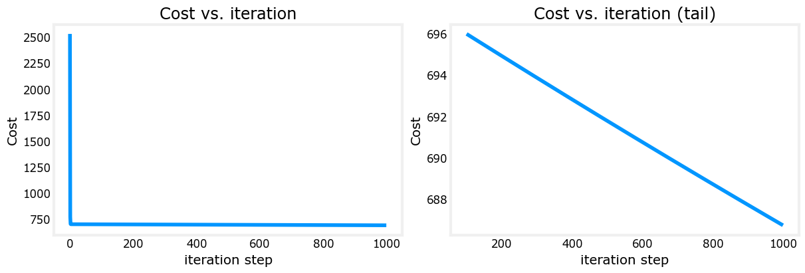

Optional Lab: Multiple Variable Linear Regression#
In this lab, you will extend the data structures and previously developed routines to support multiple features. Several routines are updated making the lab appear lengthy, but it makes minor adjustments to previous routines making it quick to review.
Outline#
1.1 Goals#
Extend our regression model routines to support multiple features
Extend data structures to support multiple features
Rewrite prediction, cost and gradient routines to support multiple features
Utilize NumPy
np.dotto vectorize their implementations for speed and simplicity
1.2 Tools#
In this lab, we will make use of:
NumPy, a popular library for scientific computing
Matplotlib, a popular library for plotting data
import copy, math
import numpy as np
import matplotlib.pyplot as plt
plt.style.use('./deeplearning.mplstyle')
np.set_printoptions(precision=2) # reduced display precision on numpy arrays
1.3 Notation#
Here is a summary of some of the notation you will encounter, updated for multiple features.
|General
Notation | Description
| Python (if applicable) |
|: ————|: ————————————————————||
| \(a\) | scalar, non bold ||
| \(\mathbf{a}\) | vector, bold ||
| \(\mathbf{A}\) | matrix, bold capital ||
| Regression | | | |
| \(\mathbf{X}\) | training example matrix |
X_train |
| \(\mathbf{y}\) | training example targets | y_train
| \(\mathbf{x}^{(i)}\), \(y^{(i)}\) | \(i_{th}\)Training Example | X[i], y[i]|
| m | number of training examples | m|
| n | number of features in each example | n|
| \(\mathbf{w}\) | parameter: weight, | w |
| \(b\) | parameter: bias | b |
| \(f_{\mathbf{w},b}(\mathbf{x}^{(i)})\) | The result of the model evaluation at \(\mathbf{x^{(i)}}\) parameterized by \(\mathbf{w},b\): \(f_{\mathbf{w},b}(\mathbf{x}^{(i)}) = \mathbf{w} \cdot \mathbf{x}^{(i)}+b\) | f_wb |
2 Problem Statement#
You will use the motivating example of housing price prediction. The training dataset contains three examples with four features (size, bedrooms, floors and, age) shown in the table below. Note that, unlike the earlier labs, size is in sqft rather than 1000 sqft. This causes an issue, which you will solve in the next lab!
Size (sqft) |
Number of Bedrooms |
Number of floors |
Age of Home |
Price (1000s dollars) |
|---|---|---|---|---|
2104 |
5 |
1 |
45 |
460 |
1416 |
3 |
2 |
40 |
232 |
852 |
2 |
1 |
35 |
178 |
You will build a linear regression model using these values so you can then predict the price for other houses. For example, a house with 1200 sqft, 3 bedrooms, 1 floor, 40 years old.
Please run the following code cell to create your X_train and y_train variables.
X_train = np.array([[2104, 5, 1, 45], [1416, 3, 2, 40], [852, 2, 1, 35]])
y_train = np.array([460, 232, 178])
2.1 Matrix X containing our examples#
Similar to the table above, examples are stored in a NumPy matrix X_train. Each row of the matrix represents one example. When you have \(m\) training examples ( \(m\) is three in our example), and there are \(n\) features (four in our example), \(\mathbf{X}\) is a matrix with dimensions (\(m\), \(n\)) (m rows, n columns).
notation:
\(\mathbf{x}^{(i)}\) is vector containing example i. \(\mathbf{x}^{(i)}\) \( = (x^{(i)}_0, x^{(i)}_1, \cdots,x^{(i)}_{n-1})\)
\(x^{(i)}_j\) is element j in example i. The superscript in parenthesis indicates the example number while the subscript represents an element.
Display the input data.
# data is stored in numpy array/matrix
print(f"X Shape: {X_train.shape}, X Type:{type(X_train)})")
print(X_train)
print(f"y Shape: {y_train.shape}, y Type:{type(y_train)})")
print(y_train)
X Shape: (3, 4), X Type:<class 'numpy.ndarray'>)
[[2104 5 1 45]
[1416 3 2 40]
[ 852 2 1 35]]
y Shape: (3,), y Type:<class 'numpy.ndarray'>)
[460 232 178]
2.2 Parameter vector w, b#
\(\mathbf{w}\) is a vector with \(n\) elements.
Each element contains the parameter associated with one feature.
in our dataset, n is 4.
notionally, we draw this as a column vector
\(b\) is a scalar parameter.
For demonstration, \(\mathbf{w}\) and \(b\) will be loaded with some initial selected values that are near the optimal. \(\mathbf{w}\) is a 1-D NumPy vector.
b_init = 785.1811367994083
w_init = np.array([ 0.39133535, 18.75376741, -53.36032453, -26.42131618])
print(f"w_init shape: {w_init.shape}, b_init type: {type(b_init)}")
w_init shape: (4,), b_init type: <class 'float'>
3 Model Prediction With Multiple Variables#
The model’s prediction with multiple variables is given by the linear model:
or in vector notation:
$\(
f_{\mathbf{w},b}(\mathbf{x}) = \mathbf{w} \cdot \mathbf{x} + b \tag{2}
\)\(
where \)\cdot$ is a vector dot product
To demonstrate the dot product, we will implement prediction using (1) and (2).
3.1 Single Prediction element by element#
Our previous prediction multiplied one feature value by one parameter and added a bias parameter. A direct extension of our previous implementation of prediction to multiple features would be to implement (1) above using loop over each element, performing the multiply with its parameter and then adding the bias parameter at the end.
def predict_single_loop(x, w, b):
"""
single predict using linear regression
Args:
x (ndarray): Shape (n,) example with multiple features
w (ndarray): Shape (n,) model parameters
b (scalar): model parameter
Returns:
p (scalar): prediction
"""
n = x.shape[0]
p = 0
for i in range(n):
p_i = x[i] * w[i]
p = p + p_i
p = p + b
return p
# get a row from our training data
x_vec = X_train[0,:]
print(f"x_vec shape {x_vec.shape}, x_vec value: {x_vec}")
# make a prediction
f_wb = predict_single_loop(x_vec, w_init, b_init)
print(f"f_wb shape {f_wb.shape}, prediction: {f_wb}")
x_vec shape (4,), x_vec value: [2104 5 1 45]
f_wb shape (), prediction: 459.9999976194083
Note the shape of x_vec. It is a 1-D NumPy vector with 4 elements, (4,). The result, f_wb is a scalar.
3.2 Single Prediction, vector#
Noting that equation (1) above can be implemented using the dot product as in (2) above. We can make use of vector operations to speed up predictions.
Recall from the Python/Numpy lab that NumPy np.dot()[link] can be used to perform a vector dot product.
def predict(x, w, b):
"""
single predict using linear regression
Args:
x (ndarray): Shape (n,) example with multiple features
w (ndarray): Shape (n,) model parameters
b (scalar): model parameter
Returns:
p (scalar): prediction
"""
p = np.dot(x, w) + b
return p
# get a row from our training data
x_vec = X_train[0,:]
print(f"x_vec shape {x_vec.shape}, x_vec value: {x_vec}")
# make a prediction
f_wb = predict(x_vec,w_init, b_init)
print(f"f_wb shape {f_wb.shape}, prediction: {f_wb}")
x_vec shape (4,), x_vec value: [2104 5 1 45]
f_wb shape (), prediction: 459.99999761940825
The results and shapes are the same as the previous version which used looping. Going forward, np.dot will be used for these operations. The prediction is now a single statement. Most routines will implement it directly rather than calling a separate predict routine.
4 Compute Cost With Multiple Variables#
The equation for the cost function with multiple variables \(J(\mathbf{w},b)\) is: $\( J(\mathbf{w},b) = \frac{1}{2m} \sum\limits_{i = 0}^{m-1} (f_{\mathbf{w},b}(\mathbf{x}^{(i)}) - y^{(i)})^2 \tag{3} \)\( where: \)\( f_{\mathbf{w},b}(\mathbf{x}^{(i)}) = \mathbf{w} \cdot \mathbf{x}^{(i)} + b \tag{4} \)$
In contrast to previous labs, \(\mathbf{w}\) and \(\mathbf{x}^{(i)}\) are vectors rather than scalars supporting multiple features.
Below is an implementation of equations (3) and (4). Note that this uses a standard pattern for this course where a for loop over all m examples is used.
def compute_cost(X, y, w, b):
"""
compute cost
Args:
X (ndarray (m,n)): Data, m examples with n features
y (ndarray (m,)) : target values
w (ndarray (n,)) : model parameters
b (scalar) : model parameter
Returns:
cost (scalar): cost
"""
m = X.shape[0]
cost = 0.0
for i in range(m):
f_wb_i = np.dot(X[i], w) + b #(n,)(n,) = scalar (see np.dot)
cost = cost + (f_wb_i - y[i])**2 #scalar
cost = cost / (2 * m) #scalar
return cost
# Compute and display cost using our pre-chosen optimal parameters.
cost = compute_cost(X_train, y_train, w_init, b_init)
print(f'Cost at optimal w : {cost}')
Cost at optimal w : 1.5578904880036537e-12
Expected Result: Cost at optimal w : 1.5578904045996674e-12
5 Gradient Descent With Multiple Variables#
Gradient descent for multiple variables:
where, n is the number of features, parameters \(w_j\), \(b\), are updated simultaneously and where
m is the number of training examples in the data set
\(f_{\mathbf{w},b}(\mathbf{x}^{(i)})\) is the model’s prediction, while \(y^{(i)}\) is the target value
5.1 Compute Gradient with Multiple Variables#
An implementation for calculating the equations (6) and (7) is below. There are many ways to implement this. In this version, there is an
outer loop over all m examples.
\(\frac{\partial J(\mathbf{w},b)}{\partial b}\) for the example can be computed directly and accumulated
in a second loop over all n features:
\(\frac{\partial J(\mathbf{w},b)}{\partial w_j}\) is computed for each \(w_j\).
def compute_gradient(X, y, w, b):
"""
Computes the gradient for linear regression
Args:
X (ndarray (m,n)): Data, m examples with n features
y (ndarray (m,)) : target values
w (ndarray (n,)) : model parameters
b (scalar) : model parameter
Returns:
dj_dw (ndarray (n,)): The gradient of the cost w.r.t. the parameters w.
dj_db (scalar): The gradient of the cost w.r.t. the parameter b.
"""
m,n = X.shape #(number of examples, number of features)
dj_dw = np.zeros((n,))
dj_db = 0.
for i in range(m):
err = (np.dot(X[i], w) + b) - y[i]
for j in range(n):
dj_dw[j] = dj_dw[j] + err * X[i, j]
dj_db = dj_db + err
dj_dw = dj_dw / m
dj_db = dj_db / m
return dj_db, dj_dw
#Compute and display gradient
tmp_dj_db, tmp_dj_dw = compute_gradient(X_train, y_train, w_init, b_init)
print(f'dj_db at initial w,b: {tmp_dj_db}')
print(f'dj_dw at initial w,b: \n {tmp_dj_dw}')
dj_db at initial w,b: -1.673925169143331e-06
dj_dw at initial w,b:
[-2.73e-03 -6.27e-06 -2.22e-06 -6.92e-05]
Expected Result:
dj_db at initial w,b: -1.6739251122999121e-06
dj_dw at initial w,b:
[-2.73e-03 -6.27e-06 -2.22e-06 -6.92e-05]
5.2 Gradient Descent With Multiple Variables#
The routine below implements equation (5) above.
def gradient_descent(X, y, w_in, b_in, cost_function, gradient_function, alpha, num_iters):
"""
Performs batch gradient descent to learn w and b. Updates w and b by taking
num_iters gradient steps with learning rate alpha
Args:
X (ndarray (m,n)) : Data, m examples with n features
y (ndarray (m,)) : target values
w_in (ndarray (n,)) : initial model parameters
b_in (scalar) : initial model parameter
cost_function : function to compute cost
gradient_function : function to compute the gradient
alpha (float) : Learning rate
num_iters (int) : number of iterations to run gradient descent
Returns:
w (ndarray (n,)) : Updated values of parameters
b (scalar) : Updated value of parameter
"""
# An array to store cost J and w's at each iteration primarily for graphing later
J_history = []
w = copy.deepcopy(w_in) #avoid modifying global w within function
b = b_in
for i in range(num_iters):
# Calculate the gradient and update the parameters
dj_db,dj_dw = gradient_function(X, y, w, b) ##None
# Update Parameters using w, b, alpha and gradient
w = w - alpha * dj_dw ##None
b = b - alpha * dj_db ##None
# Save cost J at each iteration
if i<100000: # prevent resource exhaustion
J_history.append( cost_function(X, y, w, b))
# Print cost every at intervals 10 times or as many iterations if < 10
if i% math.ceil(num_iters / 10) == 0:
print(f"Iteration {i:4d}: Cost {J_history[-1]:8.2f} ")
return w, b, J_history #return final w,b and J history for graphing
In the next cell you will test the implementation.
# initialize parameters
initial_w = np.zeros_like(w_init)
initial_b = 0.
# some gradient descent settings
iterations = 1000
alpha = 5.0e-7
# run gradient descent
w_final, b_final, J_hist = gradient_descent(X_train, y_train, initial_w, initial_b,
compute_cost, compute_gradient,
alpha, iterations)
print(f"b,w found by gradient descent: {b_final:0.2f},{w_final} ")
m,_ = X_train.shape
for i in range(m):
print(f"prediction: {np.dot(X_train[i], w_final) + b_final:0.2f}, target value: {y_train[i]}")
Iteration 0: Cost 2529.46
Iteration 100: Cost 695.99
Iteration 200: Cost 694.92
Iteration 300: Cost 693.86
Iteration 400: Cost 692.81
Iteration 500: Cost 691.77
Iteration 600: Cost 690.73
Iteration 700: Cost 689.71
Iteration 800: Cost 688.70
Iteration 900: Cost 687.69
b,w found by gradient descent: -0.00,[ 0.2 0. -0.01 -0.07]
prediction: 426.19, target value: 460
prediction: 286.17, target value: 232
prediction: 171.47, target value: 178
Expected Result:
b,w found by gradient descent: -0.00,[ 0.2 0. -0.01 -0.07]
prediction: 426.19, target value: 460
prediction: 286.17, target value: 232
prediction: 171.47, target value: 178
# plot cost versus iteration
fig, (ax1, ax2) = plt.subplots(1, 2, constrained_layout=True, figsize=(12, 4))
ax1.plot(J_hist)
ax2.plot(100 + np.arange(len(J_hist[100:])), J_hist[100:])
ax1.set_title("Cost vs. iteration"); ax2.set_title("Cost vs. iteration (tail)")
ax1.set_ylabel('Cost') ; ax2.set_ylabel('Cost')
ax1.set_xlabel('iteration step') ; ax2.set_xlabel('iteration step')
plt.show()

These results are not inspiring! Cost is still declining and our predictions are not very accurate. The next lab will explore how to improve on this.
6 Congratulations!#
In this lab you:
Redeveloped the routines for linear regression, now with multiple variables.
Utilized NumPy
np.dotto vectorize the implementations